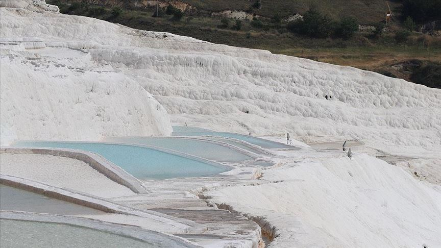

Original Article

DENIZLI, Turkey
Pamukkale, a natural landmark tourist attraction in southwestern Turkey hopes to attract some 1 million tourists over the next six months after normalizing from the effects of the novel coronavirus pandemic.
Pamukkale is a UNESCO World Heritage Site known for its mineral-rich thermal waters and white travertine terraces in Turkey's province of Denizli.
Gazi Murat Sen, the president of a local tourism and hotel management association, told Anadolu Agency that Pamukkale had reopened with strict measures against infection in an effort to host guests with high standards of hygiene.
Turkey began to gradually lift precautions designed to curb the spread of COVID-19 on June 1. So far, cafes, restaurants, beaches, parks and similar venues have been allowed to reopen.
Sen underlined that measures against COVID-19 in hotels were at the highest level, adding: "We don't think there will be any coronavirus cases thanks to the measures taken here."
Hotels are planning to host approximately 1 million tourists in the "white paradise" by the end of the year.
Nearly half of foreign tourists are expected to come from the Far East, Sen said, adding that ''as soon as passenger flights start flying from abroad again, these guests will come immediately.''
With the normalization process, hotels in Pamukkale expect to host approximately 600,000 guests from China, South Korea, Malaysia, Indonesia, Japan and Russia, he said.
The natural spring, situated at a close proximity to the white travertine terraces, is particularly popular with tourists. Dating from ancient Hierapolis, this pool formed naturally after the collapse of a series of columns in an earthquake in 692 AD, which caused thermal water to accumulate.
With its water temperature fixed at 36 C (96 F) year-round, the pool offers its visitors a unique experience to walk barefoot in its hot springs along the terraces, with believed healing benefits for cardiovascular diseases, rheumatism, skin and nerve diseases, as well as intestinal disorders when ingested.
Domestic flights have resumed in Turkey, where at least 137,969 patients from a total of 170,132 have recovered so far.
Turkey has conducted more than 2.33 million COVID-19 tests and the death toll in the country stands at 4,692.
Since first appearing in China last December, the novel coronavirus has spread to at least 188 countries and regions.
The US, Brazil, Russia, and several European countries are currently the hardest hit in the world.
The pandemic has killed over 403,000 people worldwide, with more than 7.03 million confirmed cases and nearly 3.15 million recoveries, according to figures compiled by the US' Johns Hopkins University.